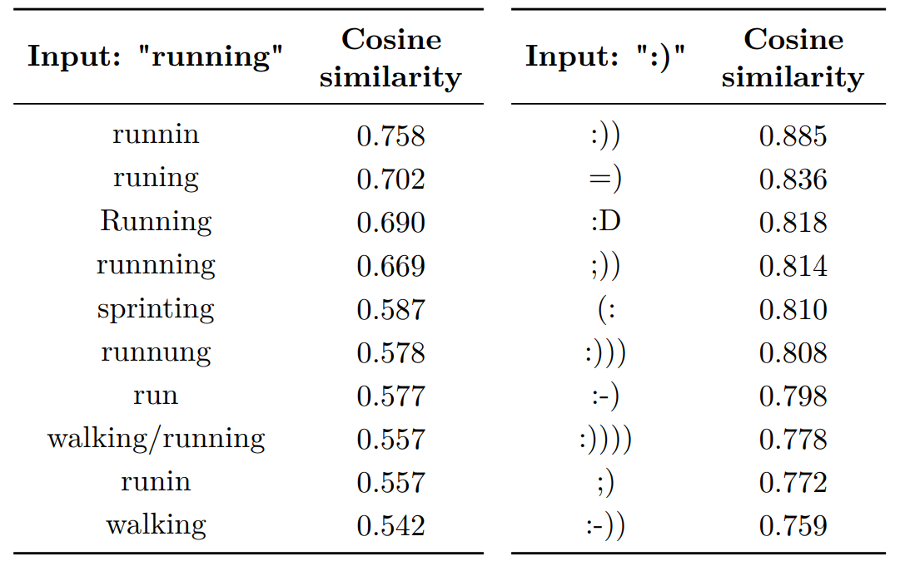
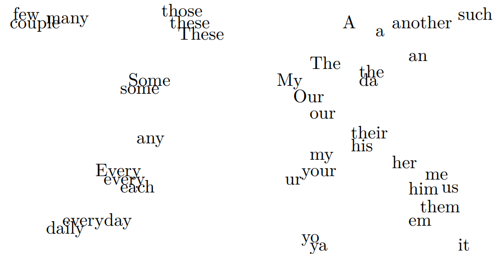
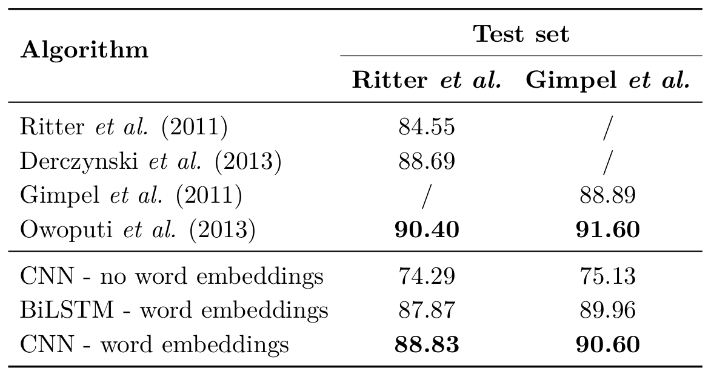
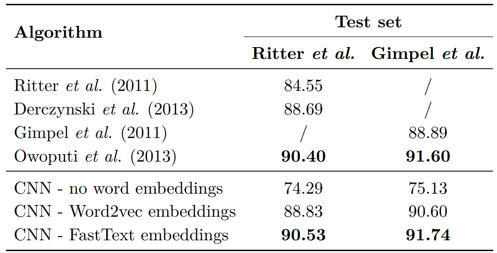
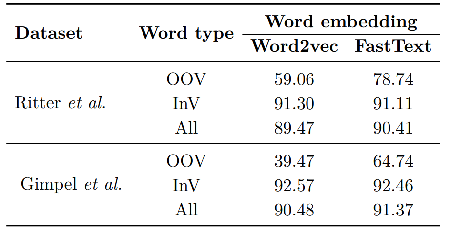
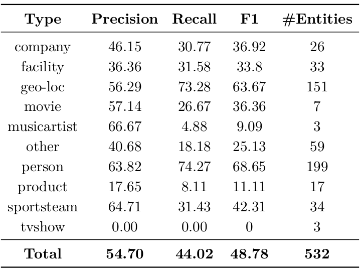
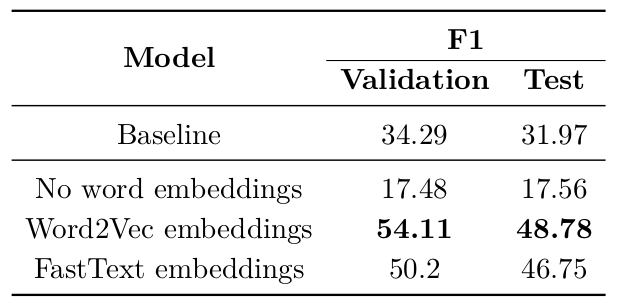

Twitter Embeddings
While context embeddings are currently the hotest paradigm in natural language processing, I spent a fair amount of my Ph.D. on word embeddings for NLP tasks on Twitter data. In this blog post I want to share some unpublished results on the usage of Word2Vec and FastText embeddings, trained on Twitter data.
Word representations
A word representation is a mathematical object associated with each word, typically a vector, for which each dimension represents a word feature (Turian et al., 2010). Each feature represents some property of the word which sometimes can be syntactically or semantically interpreted. In a supervised setting, words are often represented as one-hot vectors. That is, binary vectors with a size equal to the vocabulary size and zeros on every position except for the position which equals the index of the word within the vocabulary. However, this means that during test time, unknown words will have no word-specific representation. Also, handling of rare words will be poor because they did not occur frequently enough during training. One way to solve this is to manually define a limited number of features. For example, the feature “word ends on -ed” is a good feature for a word which should be classified as a verb in the context of PoS tagging and is common with unseen verbs. Constructing feature vectors manually is a labor intensive task and requires a lot of domain knowledge. Moreover, when a new type of domain emerges such as social media microposts, domain knowledge is limited or non-existent and consequently requires a lot of effort to build new NLP systems. Therefore, new techniques which learn good features in an unsupervised way became highly popular.
Three types of word representations
Three types of unsupervised word representations exist (Turian et al., 2010):
- Distributional word representations: Based on a co-occurrence matrix of words and word or document contexts, per-word representations are inferred. Notable methods are Latent Semantic Analysis (LSA) (Dumais et al., 1988) and Latent Dirich-let Allocation (LDA) (Blei et al., 2003).
- Clustering-based word representations: A clustering approach is used to group words with similar properties together. For example, Brown word representations use a hierarchical clustering technique to group words at multiple levels of granularity (Brown et al., 1992).
- Distributed word representations: Using a predictive neural language model (Bengio, 2008), real-valued low-dimensional dense vectors are inferred for each word. These representations are better known as word embeddings. To deal with large corpora, fast and simple variants of neural language models have emerged such as Word2vec (Mikolov et al., 2013a) and FastText ( Bojanowski et al., 2017).
Distributional word representations are known to be very memory intensive while cluster-based word representations are limited in the number of clusters they can represent. In particular, Brown word representations are binary vectors making them either very large and sparse or small and limited in expressiveness. Distributed word representations are computationally intensive. However, the introduction of Word2vec word embeddings (Mikolov et al., 2013a) reduced the training time for creating word representations from weeks to days. Consequently, this makes distributed word representations very suitable for inferring word representations when a lot of (unlabeled) data are available.
Word2vec and FastText word embeddings
Word2Vec embeddings
The Word2vec method (Mikolov et al., 2013a) for learning word representation is a very fast way of learning word representations. The general idea is to learn a word representation of a word by either predicting the surrounding words of that word in a sentence (Skip-gram architecture) or to predict the center word in a sentence, given all surrounding/context words (Continuous Bag-Of-Words architecture). Both architectures are quite simple and only consist of the the word representations themselves that should be learned. No additional weights or layers as is common in neural network architectures.
The Word2vec method does not take into account character information on threats words as atomic units. For example, the words run,runs and running all have the same root run which could be modeled as a single semantic unit and the suffixes ∅, s and ning slightly change that meaning. These suffixes are shared with other verbs and hence could be represented as a unit of semantic meaning which changes the overall meaning of a word. Currently, this is not taken into account. Additionally, large corpora contain many rare words for which either low-quality representations are learned or no representations at all. Especially in the context of Twitter microposts where many words are misspelled, abbreviated or replaced by slang words, it would be useful to recognize parts of a word that can be used for properly representing the full word.
FastText word embeddings
The FastText method (Bojanowski et al., 2017), which can be considered the successor of Word2vec because it uses the sample setup, does take into character-level information. The idea is to learn representations for character n-grams. A character n-gram is a set of n consecutive characters. These character n-grams are learned in a such a way that the sum of all character n-grams contained in a word equal the word representation of that word, i.e. the sum all context/surrounding word representation. The advantage of this approach is that no specific ‘useful’ character sequences are defined in advance and that unknown/rare words can still be represented by the sum of the character representations, even if no word representation is available. Moreover, in a noisy context where some characters are missing or are added to a word, the original meaning can still be constructed. For example: running, runnning and runnin all have the same meaning but the latter two words would be considered unknown words in the case of Word2vec word embeddings. This property will show to be very useful in the context of noisy Twitter microposts.
Examples
I trained Word2vec embeddings on a corpus of 400 million Twitter microposts (tweets), containing roughly 5 billion words. Below is an table which contains the most similar words to “running” and “:)”.

Most similar words to “running” and “:)” using word representations trained with Word2vec For the word “running”, six words are orthographic variants related to slang, spelling or capitalization (runnin, runing, Running, runnning, runnung and runin). Three words are semantically similar words (sprinting, walking/running and walking) and a single word is another conjugation of the word “running” (run). Consequently, the vector representation models a mix of relationships ranging from orthographic variations to semantics, rather than a single type of relationship. For the positive emoticon “:)”, it is observed that all ten other emoticons are also positive emoticons, even if the bracket is flipped”(:”. This is a result of the Word2vec architecture which only focuses on the context words to learn a representation and not the characters within that word.
The word representations also form a vector space with similarities and dissimilarities along specific dimensions. Below I visualized an excerpt of a 2D projection of the 1000 most frequent words on Twitter.

Similar words are closer together than dissimilar words. Moreover, specific relationships can be identified. For example:
- The first-person possessive pronouns “my” and “our” are muchcloser together than a first-person and third-person possessivepronoun (“her” or “his”).
- Slang words are very close to their standard English counterpart.E.g., “the” versus “da” and “your” versus “ur”.
- Independent of the casing, words that are the same have a very similar vector. E.g., “every” and “Every”.
These semantic and syntactic relationships are all learned automatically by the Word2Vec algorithm and encoded in the word representations. Consequently, these word representation can be used in downstream tasks to represent words and be robust to unknown words which are not part of the downstream task’s dataset but which do have a word representation in our vector space.
Part-of-Speech tagging of Twitter microposts
Part-of-Speech tagging is a longstanding NLP task in which the goal is to assign a PoS tag to each word in the sentence, in this case the micropost. Most methods rely on a set of hand-crafted features. However, these features were designed in the context of PoS tagging of news articles. A number of approaches tried to adapt these features for Twitter microposts (Ritter et al., 2011; Gimpel et al., 2011; Derczynski et al., 2013; Owoputi et al., 2013). However, Twitter microposts are much more prone to noise, contain a lot of slang and other Twitter-specific peculiarities.
Dataset
Rather than adapting those hand-crafted features, we chose for a data-driven approach which learns those features automatically, by learning word representations. The word representations were trained on a corpus of 400 million Twitter microposts (tweets). We considered two variants of the corpus. One corpus is the raw corpus and in the other corpus we replaced URLs, mentions and numbers with so-called special tokens to limit the number of rare words.
Word2vec hyperparameters
The first set of word embeddings was trained with the Word2vec algorithm. An elaborate study was done do find the optimal parameters for training the word embeddings, based on their ability to be part of the PoS tagging task. Contrary to the hyperparameters which are suggested in Word2vec papers and are proposed as the default hyperparameters, we found other parameters worked much better, and gave significantly different results.
For our tasks of PoS tagging and NER, the following hyperparameters worked best:
- Negative sampling
- Skip-gram architecture
- Window of 1
- Subsampling rate of 0.001
- Vector size of 400
Especially the vector size and window size were important.
Neural network training and results
We trained a Convolutional Neural Network (CNN) and Bidirectional Long Short-Term Memory (LSTM) network:

While the BiLSTM is normally the go-to approach for this kind of approach, it was a CNN with a filter size of three which worked best. One reason for that is that the BiLSTM spanned over the whole context while the context of the CNN is limited, which avoids overfitting and can also be explained by the short and dense nature of Twitter microposts. A network without pretrained word embeddings had a substantially lower accurary. While this setup beats almost all other approaches, the accuracy is still below Owoputi et al. (2013)’s approach. Enter FastText embeddings!
FastText embeddings: word embeddings with character information
As explained, the FastText method uses the same setup as the Word2vec method but adds character n-grams to the mix. This approach could be quite beneficial to deal with OOV words which are quite common in Twitter microposts. Because words are not atomic units anymore, we can drop the special tokens. Below are the results

As can be seen, the FastText embeddings perform better than the Word2vec embeddings as input vectors, and of course much better than using no pretrained embeddings at all. These results are significant. Moreover, the FastText + CNN approach scores as good as the best scoring approach of Owoputi et al. (2013) which is still based on traditional techniques.
Out-Of-Vocabulary vs In-Vocabulary words
One of the advantages of using FastText embeddings, is that they use character n-grams and as such can generate representations for Out-Of-Vocabulary (OOV) words. Hence, I wondered if this is the real reason why they obtain better scores when tagging microposts. Therefore, I calculated the accuracy on In-Vocabulary (InV) and Out-Of-Vocabulary (OOV) words:

As it turns out, the accuracy difference on InV words for Word2vec and FastText embeddings is insignificantly small but the performance on OOV is significantly different! Consequently, the fact that FastText embeddings are better input features than Word2Vec embeddings can be attributed to their ability to deal with OOV words!
Named Entity Recognition
The second task which I considered for testing the word embeddings is Named Entity Recognition in Twitter microposts. While the goal is not to achieve SOTA on this task, it was more about using only word embeddings and a neural network, without using any kind of traditional features.
The dataset I considered was part of a challenge during the Workshop on the Noisy User Generated Text and consisted of finding 10 different entities in Twitter microposts: company, facility, geo-location, music artist, movie, person, product, sports team, tv show and other entities.
The CNN + CRF architecture
A very popular architecture for NER is the BiLSTM+CRF setup (Huang et al., 2015; Lample et al., 2016) in which a neural network is combined with the previously very successful Conditional Random Field (CRF) technique. However, for doing NER in Twitter microposts, we found a CNN+CRF setup to work better (see a.o. Collobert & Weston 2008, and my thesis). We assume this is for similar reasons as with PoS tagging. Namely, that BiLSTMs overfit on the longer context to which they have access. In my Ph.D. thesis, I compare many more setups.

Word2vec versus FastText
As with PoS tagging, I experimented with both Word2vec and FastText embeddings as input to the neural network. Suprisingly, in contrast to PoS tagging, using Word2vec embeddings as input representation resulted in a higher F1 score than using FastText embeddings.

While I did not further investigate this, one reason could be that microposts are much more noisy than news articles and the most important clue for identifying NEs, namely starts with a capital letter, becomes useless and even hurts performance. Word2vec embeddings on the other hand only use the context to represent NEs and do not use the character information.
Conclusion
The goal of this blogpost was to highlight some work I did for tagging words in Twitter microposts by using only pretrained word embeddings and a neural network.
Word2vec embeddings worked best for NER, while FastText embeddings worked best for PoS tagging of Twitter microposts. It was only by using FastText embeddings I was able to match the SOTA in PoS tagging of Twitter microposts, which relied on the traditional feature engineering approach.
The second major conclusion was that CNNs outperformed BiLSTMs in both PoS tagging and NER for Twitter microposts. This is surprising given that BiLSTMs are the default architecture for these kind of tasks. However, Twitter microposts are different from the more main stream document such as news articles and thus have different characteristics to deal with.
Download
You can find the Twitter Embeddings for FastText and Word2Vec in this repo on Github.
Cite
If you use these embeddings, please cite the following publication in which they are described (See Chapter 3):
@phdthesis{godin2019,
title = {Improving and Interpreting Neural Networks for Word-Level Prediction Tasks in Natural Language Processing},
school = {Ghent University, Belgium},
author = {Godin, Fr\'{e}deric},
year = {2019},
}